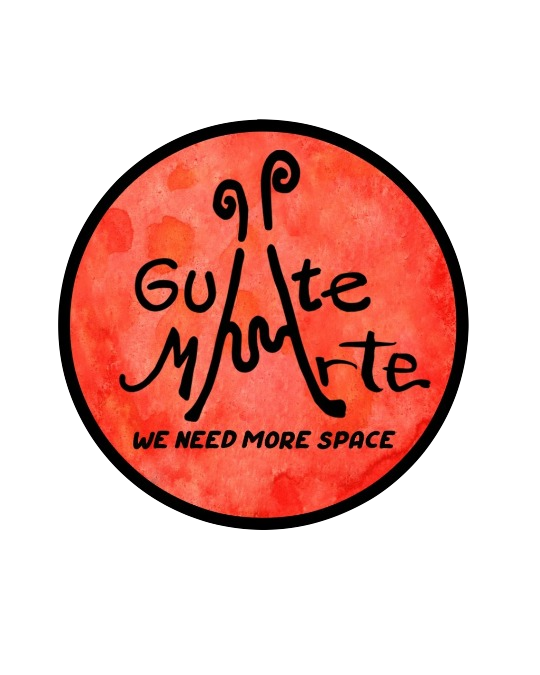

Cos’è: Spazio per la pratica artistica multidisciplinare in giro per il mondo, mostre, esibizioni, eventi, negozio di artigianato. Attualmente con base in Centro America.
Obiettivo: Connettere persone, arte, artigianato, movmento del corpo, creazioni umane. Raccontare la nostra realtà tramite più voci. Valorizzare diversi linguaggi. In un mondo che ci vuole isolati e individualisti, dopo una pandemia che ci porta a disunirci e ad avere paura dell’altro e del diverso, a stare distanti, a evitare il contatto, nasce la volontà di unirsi per pro-muovere. Sostenere il mercato in piccolo, tramite la comunicazione, la presenza, lo scambio, l’ecologia, le idee, la persona.
A favore di: libera circolazione dell’arte, visibilità delle singole/i artiste/i, artigiane/i, emozioni libere, spazio condiviso.
Qué es: Espacio para la práctica artística multidisciplinar que viaja por el mundo, exposiciones, eventos, tienda de artesanía. Actualmente se encuentra en Centroamérica.
Objetivo: Conectar las personas, el arte, la artesanía, el movimiento del cuerpo, las creaciones humanas. Contar nuestra realidad a través de varias voces. Para potenciar los diferentes lenguajes. En un mundo que nos quiere aislados e individualistas, tras una pandemia que nos lleva a desunirnos y a tener miedo del otro y del diferente, a quedarnos separados, a evitar el contacto, surge la voluntad de unirnos para promover. Apoyar el mercado en una pequeña escala, a través de la comunicación, la presencia, el intercambio, la ecología, las ideas, la persona.
A favor de: la libre circulación del arte, la visibilidad de los artistas individuales, los artesanos, las emociones libres, el espacio compartido.